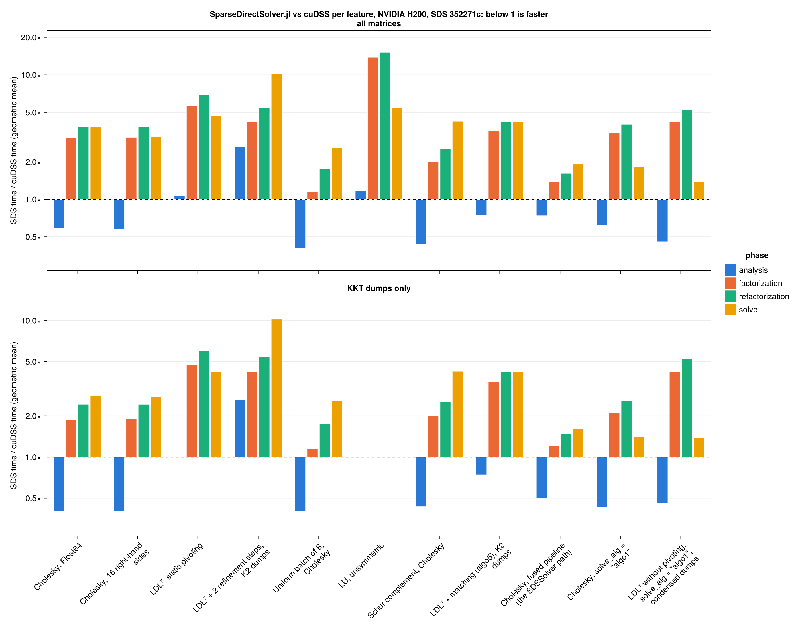

Performance
Time of SparseDirectSolver.jl divided by the time of cuDSS per feature and phase (BenchmarkTools medians), geometric mean over the benchmark matrices (below 1 is faster).

The comparison was measured at commit 352271c (2026-11-09) against cuDSS 1.0.0 (CUDSS.jl 1.0) on an NVIDIA H200. The cuDSS matching is set explicitly: off for every feature except ldlt_matching ("algo5" on both sides), since cuDSS 1.0 matches and scales "S"/"H"/"G" matrices by default and SparseDirectSolver.jl only when matching_alg is set. The lower panel of the plot keeps the MadNLP KKT dumps only. SDS/cuDSS ratios (geometric means):
| feature | matrices | factorization | refactorization | solve | KKT refactorization | KKT solve |
|---|---|---|---|---|---|---|
| Cholesky, Float64 | 15 | 3.13× | 3.84× | 3.84× | 2.44× | 2.83× |
| Cholesky, 16 right-hand sides | 15 | 3.16× | 3.83× | 3.20× | 2.44× | 2.75× |
| LDLᵀ, static pivoting | 24 | 5.64× | 6.87× | 4.66× | 6.00× | 4.20× |
| LDLᵀ + 2 refinement steps, K2 dumps | 9 | 4.20× | 5.46× | 10.24× | 5.46× | 10.24× |
| Uniform batch of 8, Cholesky | 10 | 1.15× | 1.76× | 2.60× | 1.76× | 2.60× |
| LU, unsymmetric | 2 | 13.82× | 15.19× | 5.46× | – | – |
| Schur complement, Cholesky | 10 | 2.01× | 2.54× | 4.25× | 2.54× | 4.25× |
| LDLᵀ + matching (algo5), K2 dumps | 9 | 3.57× | 4.21× | 4.21× | 4.21× | 4.21× |
Cholesky, fused pipeline (the KKTSolver and MadNLP SDSSolver path) | 15 | 1.38× | 1.62× | 1.92× | 1.48× | 1.62× |
Cholesky, solve_alg = "algo1" | 15 | 3.41× | 4.01× | 1.83× | 2.60× | 1.41× |
LDLᵀ without pivoting, solve_alg = "algo1", condensed dumps | 10 | 4.23× | 5.24× | 1.39× | 5.24× | 1.39× |
On the condensed KKT systems the fused pipeline is within 1.48× of cuDSS for the refactorization and 1.62× for the solve; on the SuiteSparse and Laplacian matrices the stock handle API is 9.52× behind for the Cholesky refactorization. The per-matrix numbers are in bench/comparison/comparison.md. The benchmark harness and the cuDSS baselines are described in bench/README.md; the comparison is regenerated by hand:
julia --project=bench bench/compare.jl --solver=cudss
julia --project=bench bench/compare.jl --solver=sds --backend=cuda
julia --project=bench/report bench/compare_report.jlFused pipeline
FusedSolver is the fast path of the interior-point loop: the analysis builds a plan in which one dependency-counter kernel factorizes the whole elimination tree per refactorization (instead of one launch per level and size bin), followed by the inverses of the diagonal blocks of the fronts, and the solve is a partitioned-inverse sweep, one dependency-counter kernel per direction. The feature cholesky_fused of the comparison measures it; its analysis phase includes a stock factorization and building the plans.
It is restricted to what the kernels do: a GPU backend (the dependency-counter kernels spin on resident workgroups, so the KernelAbstractions CPU backend is refused), real "SPD" matrices and real "S" matrices factored without pivoting, one right-hand side, no uniform batch, Schur complement, matching, iterative refinement or mixed precision; each raises NotSupportedError (the docstring lists them). Its factorization is bitwise reproducible and deterministic_mode = 1 selects the reproducible forward sweep of its solve (T35). DirectSolver remains the general solver; its solve_alg = "algo1" (below) runs the same solve after the stock factorization, and T37–T38 move the rest of the pipeline under its execute!.
Partitioned-inverse solve (solve_alg = "algo1")
With setparam!(solver, "solve_alg", "algo1") before the "analysis", a DirectSolver solves with the fused solve of the pipeline above after its own factorization: the analysis sizes the inverse storage of the diagonal blocks L₁₁ of every front of width ≤ 256 and one dependency-counter solve segment over the tree (reported in slot 14 of "memory_estimates" and added to slots 1, 2 and 5); every "factorization"/"refactorization" ends with one launch that inverts the blocks of the new factor (no host synchronization, no allocation); "solve" turns each front's triangular solve into a matrix-vector product inside one kernel per direction, with the fronts wider than 256 on the vendor dense sweeps. deterministic_mode = 1 (read at every solve) selects the pull forward sweep, bitwise reproducible. The sub-phases "solve_fwd_perm" … "solve_bwd_perm" run the matching parts of the fused solve (bitwise equal to "solve" under deterministic_mode = 1), iterative refinement (ir_n_steps, plain or FGMRES) runs its corrections through it, and matching (matching_alg) wraps it as it wraps the level sweeps.
Its scope is that of the kernels: real "SPD" (and real "HPD"), real "S" and "H" with pivot_type = 'N' (the fused sweeps apply no local pivot order and no 2×2 pivots), one right-hand side, solve_mode = 0, a single matrix (no uniform batch), no Schur complement mode, and a backend whose resident workgroups make progress while others spin (CUDA, AMDGPU, oneAPI; not the KernelAbstractions CPU backend or Metal). Anything else raises NotSupportedError at the analysis, the factorization (pivot_type changed to pivoting) or the solve, never a silent fallback to the level sweeps; "algo1" set after the analysis, or a factorization run with "default" before an "algo1" solve, raises too.
In the comparison (cholesky_algo1, ldlt_algo1) the solve drops from 10.3 ms to 2.33 ms on the 78k-bus condensed KKT system (cuDSS: 1.63 ms), and the geometric mean of the SDS/cuDSS solve ratio from 3.84× (level sweeps, cholesky_f64) to 1.83× over the same 15 matrices. "default" stays the level sweeps: the "algo1" residuals are up to 38× higher without refinement (bcsstk38), the default "S" pivoting is outside its scope, it costs device memory and one launch per factorization, and it was measured on sm_90 only (the T36 Report in TASKS.md has the measurements behind that choice).